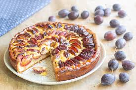

Tarte aux prunes
Liste des ingrédients pour 8:
- 500g de Prunes
- 1 Pâte brisé
- 100g de crème fraiche
- 75g de sucre
- 2 oeufs
Préparation
préchauffez le four à 180 deg. (Th.6).
Couper les prunes en deux. Mélanger les oeufs, le sucre et la crème fraiche...
Images
